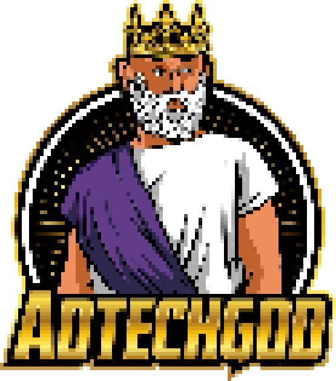

Welcome to the magical world of The Great Exchange; you have been selected as Clerics Clerics are intermediaries between the mortal world and the distant planes of the gods. As varied as the gods they serve, clerics strive to embody the handiwork of their deities. No ordinary priest, a cleric is imbued with divine magic. (against your will!) to serve the almighty AdTechGod.
The Exchangers have been facing a torrential The Blind-Auction Blight The Bot King's spectral hordes conjure The Blind-Auction Blight, a chaotic mist that forces the realm to cast gold into campaigns without strategy, severing the silver cords of attribution so no one can discern which bid truly won an Exchanger's devotion to the AdTechGod. under the tyrannical Bot King and his ruthless Bots.
You are to serve the AdTechGod, imbued by their magic to serve the purpose of identifying the Channels and Creative Messages that inspire Exchangers to determine their final destination: The Conversion.
Clerics guide the Ad Creative Banner by pacing the flow of gold through the Bot King's winds. This ensures tributes are never wasted and reach the Exchangers at the perfect moment.
The Rite of Attribution reveals which magical touchpoints truly guided an Exchanger's journey. By invoking these rites, Clerics pinpoint which strategies converted an Exchanger to a devoted follower.
Historically, unfaithful Clerics paid no mind to the corruption of their banners so long as they received the Bot King's tainted gold.
However, faithful Clerics understand that mastering the flow of souls and the Rite of Attribution ensures the Great Houses return to offer their tributes. These Clerics watch over the entire life cycle of the Ad Creative Banner, bridging the gap between the Domain-Keepers and the AdTechGod.
Through their devotion, Good Freestarian Clerics purify the essence of these realms and the density of their banners, ensuring that seekers from afar are drawn back to their light once more.
☠️ The campaigns fall into chaos.
The Exchanger fades into darkness.